Chapter 5 · avatars
Avatar system — styles, models, mocap
The /avatars studio is a local-only playground for the customisation system: a gallery comparing every procedural style side by side (same exercise, same build, same freeze-frame), a studio for tuning single figures, and a model-character lane exploring GLB characters with BVH mocap, wardrobe and species heads.
The style gallery
explorationEight procedural styles rendered side by side, each card printing proportions measured off its own live rig — so directions are compared, not eyeballed in isolation.
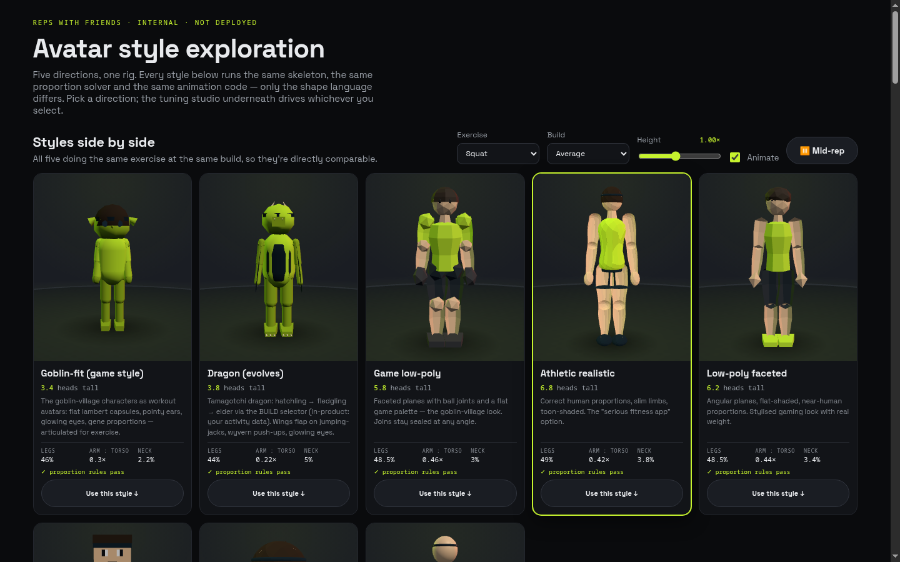
How it works. One rig spec per style (site/avatars.js + site/avatar-styles/*.js); a shared dimension solver (rig-core.js) derives the mesh from the spec, and the same solver produces each card's printed proportion summary — a label can never disagree with the render. Gallery order puts the game look first: goblinfit · dragon · gamelow · athletic · lowpoly · blocky · chibi · minimal.
Every card freezes at MID_REP = 0.52 — deep in the eccentric, the phase that shows the most about a rep — so screenshots are comparable across styles. The page manages a hard WebGL context budget (12 live, releases off-screen renderers first) to stay under Chrome's ~16-context eviction limit.
proven by: apps/avatars/test/ suite (probe + verify scripts)
Model characters — Geno + mocap
explorationGeno (the reference GLB humanoid) driven by real BVH motion capture, plus a fabric-deforming wardrobe and swappable species heads.
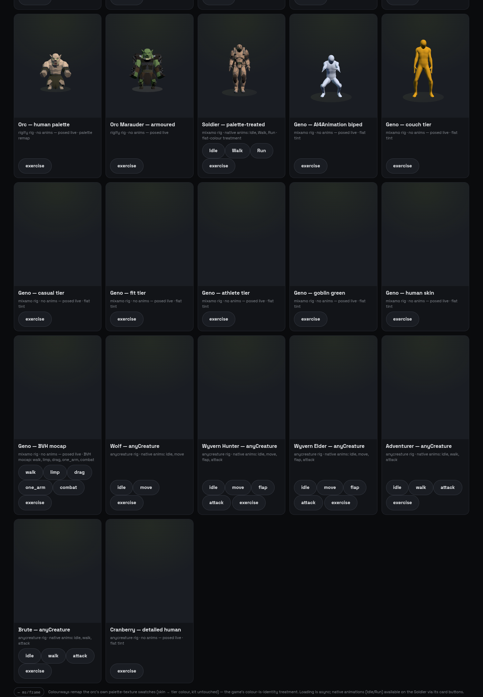
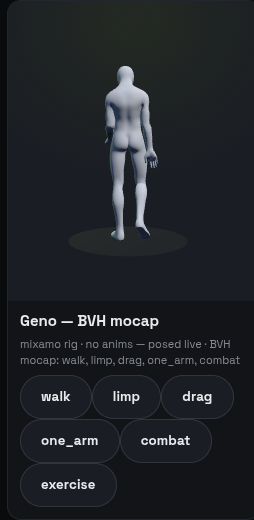
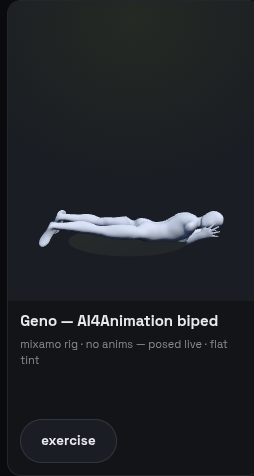
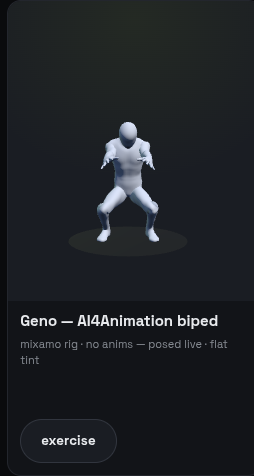
How it works. BVH clips (site/models/*.bvh: walk-stick, combat, drag, limp, one-arm) are loaded by a vendored BVHLoader and retargeted onto the GLB skeleton — so exercise form comes from real captured motion rather than hand animation. The same driver plays on the wardrobe variants, which is what makes the deformation stress tests meaningful.
Wardrobe + species heads
exploration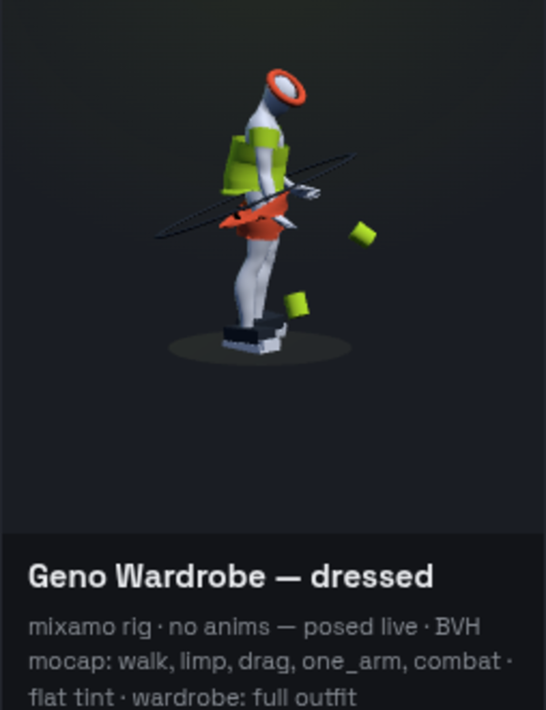
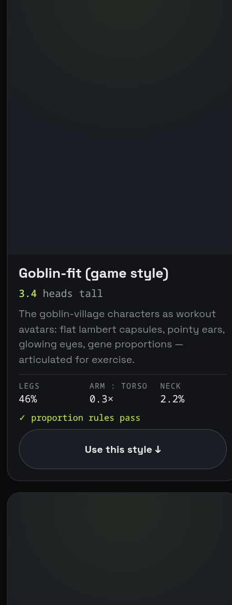
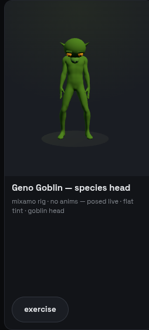
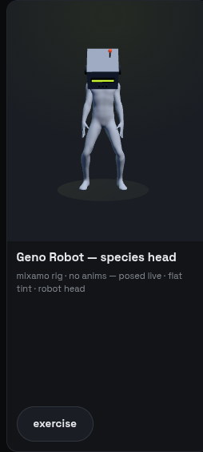
How it works. The wardrobe is fabric-simulated garment meshes bound to the body (the newest approach, 29 Aug) — the stress suite runs the full kit through every extreme pose: combat swing, curl top, drag, jumping jacks, limp, one-arm, push-up bottom, deep squat, widest stride. Screenshots are per-pose evidence the garments don't explode. Species heads swap the skull mesh on the same body, proving orc/dragon/robot variants share one pipeline.
The model cast
exploration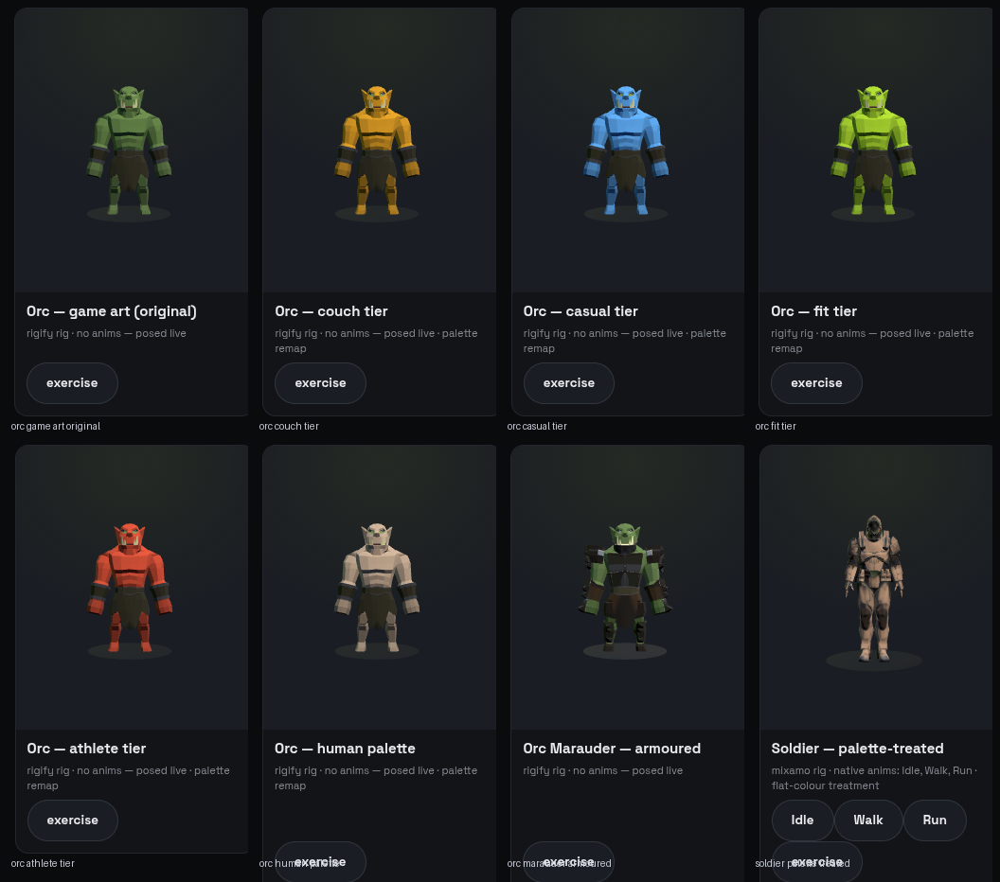
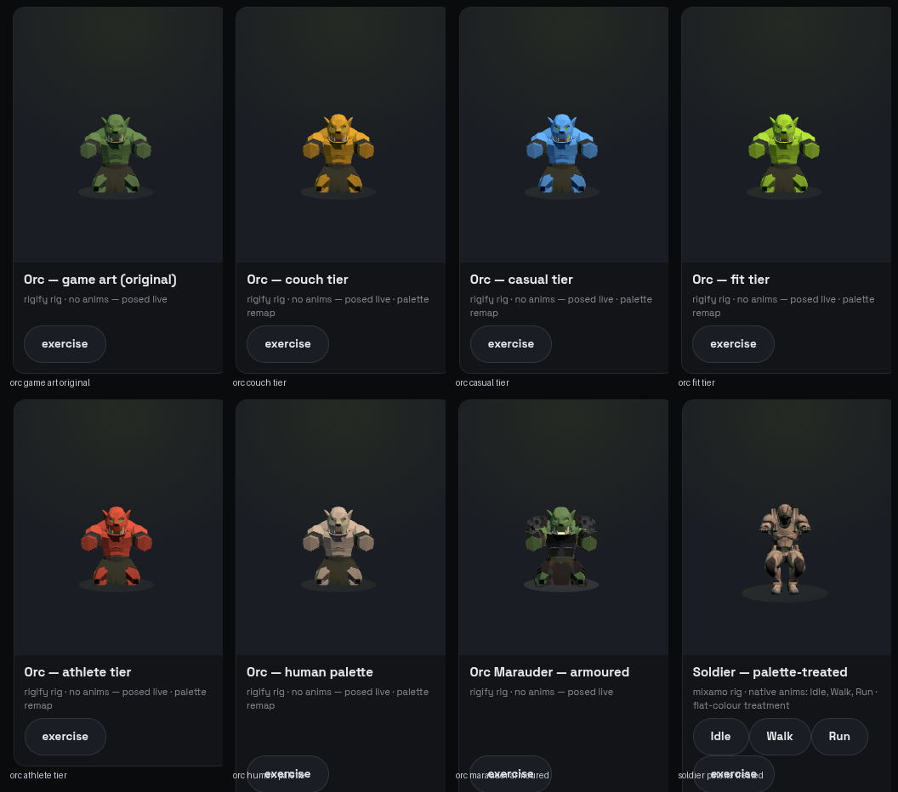
What. Twelve rigged GLBs in site/models/: Geno (the reference humanoid), orcs (orc, orc_marauder), dragons (dragon_elder, dragon_hunter), Soldier, Xbot, RobotExpressive, humanoid_adventurer, humanoid_brute, wolf, Cranberry — all driven by the same exercise/rig core, rendered in the models section of the gallery.
Why a cast: the avatar system has to hold up across species (the dragon problem below) and silhouettes, not just one ideal human.
The measured look investigation
documentedWhy our early avatars didn't match the reference game — measured in pixels, not eyeballed — and the fix list it produced. Full write-up: notes_avatars_investigation.md.
The one-line law the investigation produced:
Matching only the mesh recipe (the goblinfit port was faithful — ears, red eyes, two-tone derivation, 6-radial capsules) still read "totally different", because the reference look lives mostly in the other five terms. Deltas, ranked by measured impact:
- 1 · No world — our figure floated on a >90% near-black void; the reference is ~80% warm textured tiles under sky. Biggest single delta.
- 2 · Wrong palette — tier-lime outfits rendered olive/khaki under our rig; the reference green is clear and cool, and lime appears nowhere in it.
- 3 · Wrong proportions — our 3.4-heads athlete vs the reference ~2.7-heads chibi (head+ears ≈ 40% of height, ≈1.5–1.9× body width, no neck).
- 4 · Extra anatomy — articulated joints, mittens, wedge feet: the reference has single hanging capsules, no elbows ever.
- 5 · Wrong camera — product-sheet front-on FOV 32 vs the reference's −52° top-down FOV 60 with the figure ~8% of frame.
- 6 · Wrong light — three-point studio rig with coloured rims vs one warm sun + cool ambient + soft shadows.
- 7 · Wrong pose — frozen mid-squat vs idle/glide/bob.
- 8 · Missing game furniture — selection ring, job icons, ground shadow.
The dragon post-mortem (why the first dragon read "person in a dragon suit"): an upright humanoid biped can't read as a dragon. A dragon needs a horizontal-axis silhouette (long neck, counterbalancing tail), big contrasting wing membranes, a projecting snout, reptile posture — the reference game's own non-humanoid (the fortress wolf) is built on a horizontal axis for exactly this reason. dragon2.js is the second attempt informed by that.
Everything was extracted programmatically — in-page raycasting to locate characters, pixel sampling for exact hexes and silhouettes — which is why the numbers above can be specific.